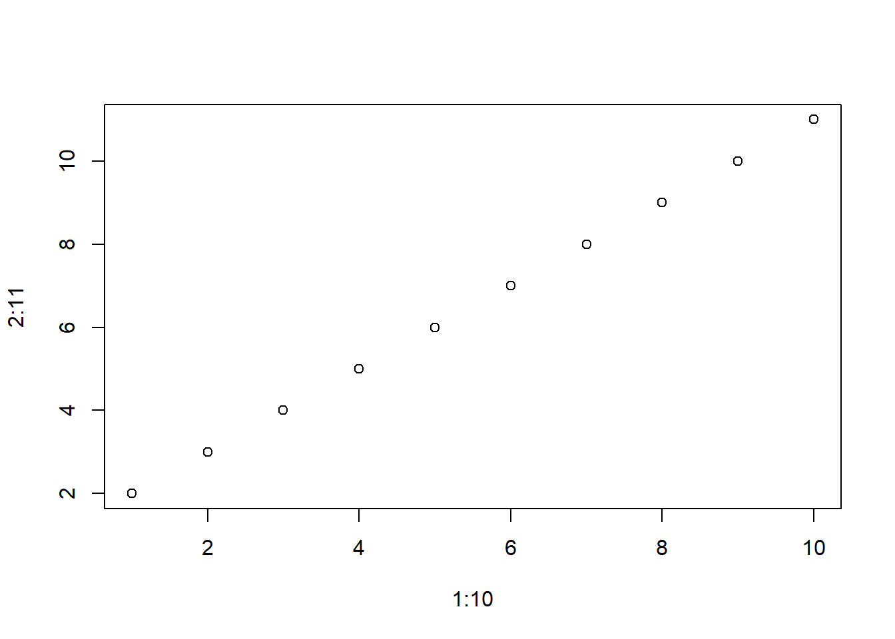
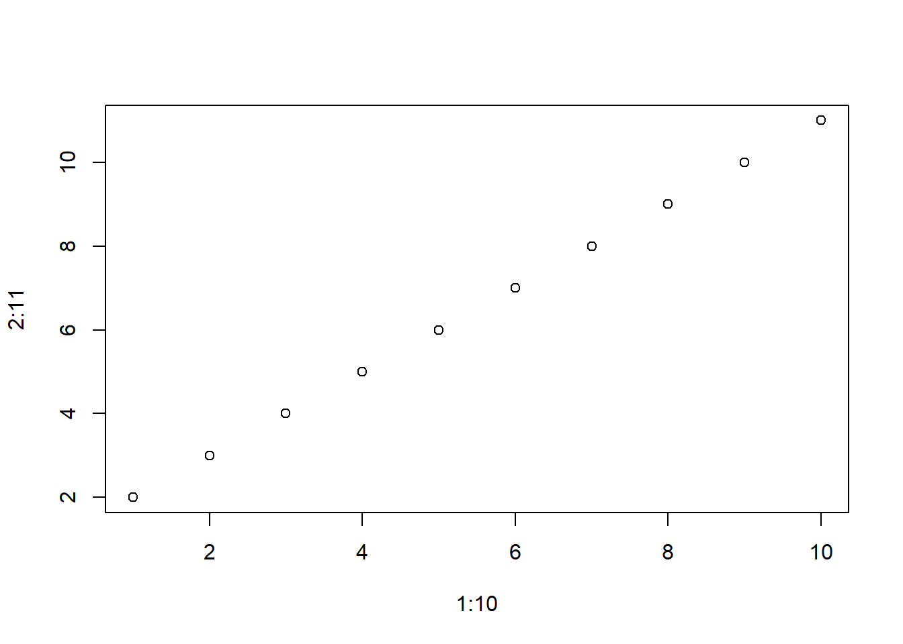

plot(1:10, 2:11)
What about (1)?
And (2)?
And (3)?
Here is Figure 1
plot(1:10, 2:11)
The {glossr} package offers useful functions to recreate interlinear glosses in R Markdown texts. The immediate solution for a \(LaTeX\) output is to use a specific library, such as {gb4e} (the one I knew when this package was born) or {expex} (the one this package uses now). If PDF output is enough for you, you can still use this package to automatically print them in an R-chunk, minimizing typos1, and even generate them automatically from a dataframe with your examples! But chances are, PDF is not enough for you, and you would also like a nice rendering (or at least some rendering) of your interlinear glosses in HTML as well… and why not, MS Word! This offers some challenges, because you would need to figure out how to render them to begin with, and neither the way to print them nor the way to reference them are compatible across output formats. I took that pain and packaged it so you don’t need to feel it.
You can start using glossr in an R Markdown file by calling the library and then use_glossr() to activate some background stuff. Mainly, this function informs all the other functions whether you are using \(LaTeX\), HTML2 or neither, in which case it assumes you have Word output. This vignette has been run in all three formats by changing the output format to bookdown::pdf_document2, which renders a PDF file; bookdown::html_document2 and rmdformats::readthedown, which render HTML files; and officedown::rdocx_document, which renders an MS Word file (Xie 2022; Gohel and Ross 2022; Barnier 2022). As you can see in vignette("styling"), use_glossr() also takes some variables to set up document-wide styling options for specific parts of your glosses. The code below sets the name of the source to render in boldface and the first line of each gloss in italics.
devtools::load_all()ℹ Loading glossr# library(glossr)use_glossr(styling = list(
source = "b",
first = "i"
))Setting up the `leipzig` engine.When you want to include an example, create a gloss with as_gloss() and call it inside a normal chunk. There are currently four named, optional arguments that will be treated specially:
label will be interpreted as the label for cross-references;
source will be interpreted as text for a non-aligned first line, e.g. a reference to the source of your example;
translation will be interpreted as text for a free translation;
trans_glosses indicates what character should surround the translation, by default ". (See vignette("styling").)
All other values will be interpreted as lines to be aligned and reproduced in the order given, but only up to 3 lines are allowed.3
my_gloss <- as_gloss(
"她 哇的一聲 大 哭起來，",
"tā wā=de-yì-shēng dà kū-qǐlái,",
"TSG waa.IDEO-LINK-one-sound big cry-inch",
translation = "Waaaaa, she began to wail.",
label = "my-label",
source = "ASBC (nº 100622)"
)
my_glossASBC (nº 100622)
她 哇的一聲 大 哭起來，
tā wā=de-yì-shēng dà kū-qǐlái,
TSG waa.IDEO-LINK-one-sound big cry-inch
“Waaaaa, she began to wail.”
The label given to as_gloss() allows you to cross-reference the example: in PDF this looks like example (\@ref(my-label)), whereas in HTML and Word you would use example (@my-label). What should YOU do? gloss() can be used inline to generate a reference for either PDF or HTML, depending on the output of your file: (4) in this case.
If you have many examples, you might want to keep them in their own file, if you don’t have them like that already. glossr offers a small dataset for testing, called data(glosses).
library(magrittr)
library(dplyr) # for select() and filter()
data(glosses)
glosses <- glosses %>%
select(original, parsed, translation, label, source) %>%
mutate(source = paste0("(", source, ")"))
glosses# A tibble: 5 × 5
original parsed trans…¹ label source
<chr> <chr> <chr> <chr> <chr>
1 Mér er heitt/kalt "\\te… I am h… feel… (Eina…
2 Hace calor/frío "make… It is … amb-… (Pust…
3 Ik heb het koud "\\te… I am c… feel… (Ross…
4 Kotae-nagara otousan to okaasan wa honobonoto ata… "repl… While … hear… (Shin…
5 Ainiku sonna shumi wa nai. Tsumetai-none. Kedaru-… "unfo… Unfort… lang… (Shin…
# … with abbreviated variable name ¹translationglosses$label[1] "feel-icelandic" "amb-spanish" "feel-dutch" "heartwarming-jp"
[5] "languid-jp" Assuming you have them in a table with columns matching the arguments of as_gloss(), you can give it to gloss_df() directly and it will do the job. That is: columns named “translation”, “source”, “label” and “trans_glosses” will be interpreted as those arguments, and all the others will be read as lines to align regardless of their column names. This table has more columns than we need, so we will only select the right ones and print the glosses of the first three rows. Note that the values in the “label” column will be used as labels: `r gloss("feel-icelandic")` will return (5).
gloss_df(head(glosses, 3))(Einarsson 1945:170)
Mér er heitt/kalt
1SG.DAT COP.1SG.PRS hot/cold.A
“I am hot/cold.”
(Pustet 2015:908)
Hace calor/frío
make.3SG.PRS heat/cold..N.A
“It is hot/cold; literally: it makes heat/cold.”
(Ross 1996:204)
Ik heb het koud
1SG have 3SG COLD.A
“I am cold; literally: I have it cold.”
This package also offers a few extensions when working on PDF output. On the one hand, gloss_list() allows you to nest a list of glosses and have both a reference for the list and for each individual item. This will not work in HTML or Word, which will just keep the numbering on the top level. But on PDF, given the function on some examples from Shindo (2015), we can use `r gloss("jp")` to reference ((jp?)), or `r gloss("heartwarming-jp")` and `r gloss("languid-jp")` to reference (8) and (9).
filter(glosses, endsWith(label, "jp")) %>%
gloss_df() %>%
gloss_list(listlabel = "jp")(Shindo 2015:660)
Kotae-nagara otousan to okaasan wa honobonoto atatakai2 mono ni tsutsum-areru kimochi ga shi-ta.
reply-while father and mother TOP heartwarming warm thing with surround-PASS feeling NOM do-PST
“While replying (to your question), Father and Mother felt like they were surrounded by something heart warming.”
(Shindo 2015:660)
Ainiku sonna shumi wa nai. Tsumetai-none. Kedaru-souna koe da-tta.
unfortunately such interest TOP not.exist cold-EMPH languid-seem voice COP-PST
“Unfortunately I never have such an interest. You are so cold. (Her) voice sounded languid.”
Finally, it might be the case that you want to apply \(LaTeX\) formatting to a long string of elements for your first lines of glosses, e.g. set half of your example in italics. In order to facilitate applying the same formatting to each individual element, this package offers you gloss_format_words(), which you can implement to the strings given to as_gloss().
Internally, glossr will try to parse \(LaTeX\) formatting into HTML but currently it doesn’t parse it to Word or read HTML/markdown tags. (But see vignette("styling").)
gloss_format_words("A long piece of text", "textit")[1] "\\textit{A} \\textit{long} \\textit{piece} \\textit{of} \\textit{text}"my_gloss <- as_gloss(
original = gloss_format_words("Hace calor/frío", "textbf"),
parsed = "make.3SG.PRS heat/cold.N.A",
translation = "'It is hot/cold'",
label = "formatted"
)
my_gloss
Hace calor/frío
make.3SG.PRS heat/cold.N.A
“‘It is hot/cold’”
The Latex output writes your glosses with the format required by the {expex} package. The default HTML rendering uses leipzig.js 0.8.0 (and, of course, {htmltools} (Cheng et al. 2021) to read it with R). The Word output is an invisible table generated with {flextable} (Gohel 2022). Note that if the translation is very long it could exceed the margins of the file in Word (as is the case of example (8)), and at least for the time being you need to fix it manually by selecting the translation and reducing the width of its cell.
If you are familiar with these tools and would like to suggests expansions or contribute to the package, go ahead, I would love to hear from you!
Most of my code is designed to avoid typos. Let’s just say that this package would have taken a few hours less if I didn’t constantly write leizpig instead of leipzig.↩︎
You can also choose between the default HTML implementation, with leipzig.js, or a “legacy” implementation with simple tooltips and up to two glossing lines; do so by running use_glossr("tooltip").↩︎
Note that if you use Chinese characters you will need to add some \(LaTeX\) packages (namely {fontspec} and {xeCJK}). You can do that either by adding them to the header-includes section or to the extra_dependencies list inside the pdf_document output section in your YAML. Thanks to Thomas Van Hoey for offering me the example and pointing this out.↩︎